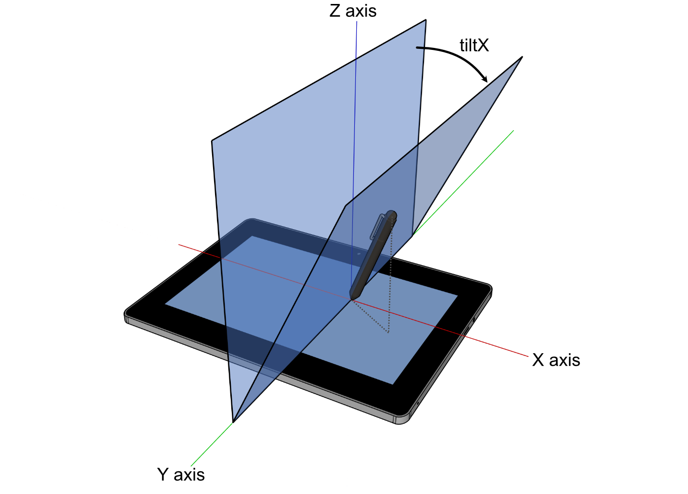
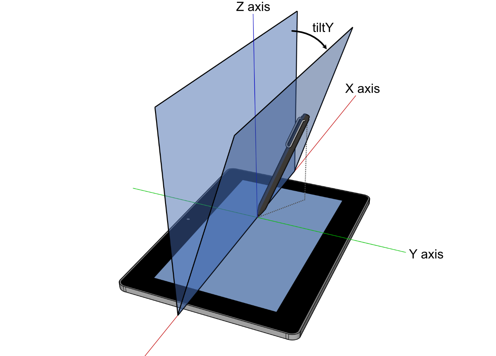
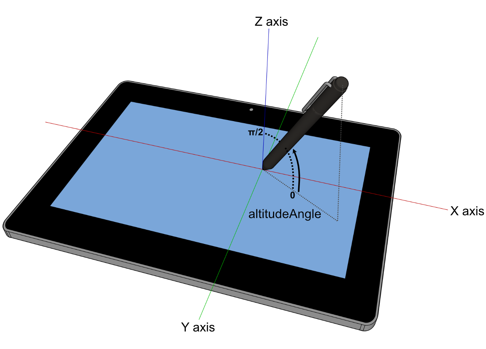
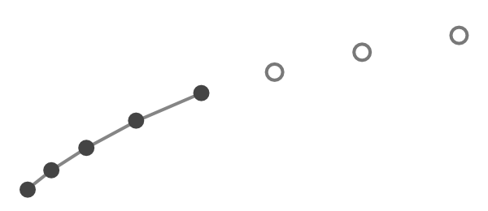

The features in this specification extend or modify those found in Pointer Events, a W3C Recommendation that describes events and related interfaces for handling hardware agnostic pointer input from devices including a mouse, pen, touchscreen, etc. For compatibility with existing mouse based content, this specification also describes a mapping to fire Mouse Events for other pointer device types.
This specification is an update to [[PointerEvents2]] which was shipped broadly by Google Chrome and Microsoft Edge and Mozilla Firefox.
Level 3 includes editorial clarifications and new features that facilitate more use cases, in an effort to enable wider developer and browser adoption.
Introduction
Today, most [[HTML]] content is used with and/or designed for mouse input. Those that handle input in a custom manner typically code to [[UIEVENTS]] Mouse Events. Newer computing devices today, however, incorporate other forms of input, including touchscreens, pen input, etc. Event types have been proposed for handling each of these forms of input individually. However, that approach often incurs unnecessary duplication of logic and event handling overhead when adding support for a new input type. This often creates a compatibility problem when content is written with only one device type in mind. Additionally, for compatibility with existing mouse-based content, most user agents fire Mouse Events for all input types. This makes it ambiguous whether a Mouse Event represents an actual mouse device or is being produced from another input type for compatibility, which makes it hard to code to both device types simultaneously.
To reduce the cost of coding to multiple input types and also to help with the above described ambiguity with Mouse Events, this specifications defines a more abstract form of input, called a pointer. A pointer can be any point of contact on the screen made by a mouse cursor, pen, touch (including multi-touch), or other pointing input device. This model makes it easier to write sites and applications that work well no matter what hardware the user has. For scenarios when device-specific handling is desired, this specification also defines properties for inspecting the device type which produced the event. The primary goal is to provide a single set of events and interfaces that allow for easier authoring for cross-device pointer input while still allowing for device-specific handling only when necessary for an augmented experience.
An additional key goal is to enable multi-threaded user agents to handle direct manipulation actions for panning and zooming (for instance, with a finger or stylus on a touchscreen), without blocking on script execution.
While this specification defines a unified event model for a variety of pointer inputs, this model does not cover other forms of input such as keyboards or keyboard-like interfaces (for instance, a screen reader or similar assistive technology running on a touchscreen-only device, which allows users sequential navigation through focusable controls and elements). While user agents might choose to also generate pointer events in response to these interfaces, this scenario is not covered in this specification.
In the first instance, authors are encouraged to provide equivalent functionality for all forms of input by responding to high-level events such as focus, blur and click. However, when using low-level events (such as Pointer Events), authors are encouraged to ensure that all types of input are supported. In the case of keyboards and keyboard-like interfaces, this might require the addition of explicit keyboard event handling. See WCAG Guideline 2.1 Keyboard Accessible [[WCAG21]] for further details.
A pointer is a hardware agnostic representation of input devices that can target a specific coordinate (or set of coordinates) on a screen.
The events for handling generic pointer input look a lot like those for mouse: pointerdown, pointermove, pointerup, pointerover, pointerout, etc. This facilitates easy content migration from Mouse Events to Pointer Events.
Pointer Events provide all the usual properties present in Mouse Events (client coordinates, target element, button states, etc.) in addition to new properties for other forms of input: pressure, contact geometry, tilt, etc. So authors can easily code to Pointer Events to share logic between different input types where it makes sense, and customize for a particular type of input only where necessary to get the best experience.
While Pointer Events are sourced from a variety of input devices, they are not defined as being generated from some other set of device-specific events. While possible and encouraged for compatibility, this spec does not require other device-specific events be supported (e.g. mouse events, touch events, etc.). A user agent could support pointer events without supporting any other device events. For compatibility with content written to mouse-specific events, this specification does provide an optional section describing how to generate compatibility mouse events based on pointer input from devices other than a mouse.
This specification does not provide any advice on the expected behavior of user agents that support both Touch Events (as defined in [[TOUCH-EVENTS]]) and Pointer Events. For more information on the relationship between these two specifications, see the Touch Events Community Group.
Examples
The following are basic examples that demonstrates how some of the APIs in this specification might be used by authors. Further, more specific examples are provided in the relevant sections of this document.
/* Bind to either Pointer Events or traditional touch/mouse */
if (window.PointerEvent) {
// if Pointer Events are supported, only listen to pointer events
target.addEventListener("pointerdown", function(e) {
// if necessary, apply separate logic based on e.pointerType
// for different touch/pen/mouse behavior
...
});
...
} else {
// traditional touch/mouse event handlers
target.addEventListener('touchstart', function(e) {
// prevent compatibility mouse events and click
e.preventDefault();
...
});
...
target.addEventListener('mousedown', ...);
...
}
// additional event listeners for keyboard handling
...
window.addEventListener("pointerdown", detectInputType);
function detectInputType(event) {
switch(event.pointerType) {
case "mouse":
/* mouse input detected */
break;
case "pen":
/* pen/stylus input detected */
break;
case "touch":
/* touch input detected */
break;
default:
/* pointerType is empty (could not be detected)
or UA-specific custom type */
}
}
A unique identifier for the pointer causing the event. User agents MAY reserve a generic pointerId value of 0 or 1 for the primary mouse pointer. The pointerId value of -1 MUST be reserved and used to indicate events that were generated by something other than a pointing device. For any other pointers, user agents are free to implement different strategies and approaches in how they assign a pointerId value. However, all active pointers in the top-level browsing context (as defined by [[HTML]]) must be unique, and the identifier MUST NOT be influenced by any other top-level browsing context (i.e. one top-level browsing context cannot assume that the pointerId of a pointer will be the same when the pointer moves outside of the browsing context and into another top-level browsing context). The user agent MAY recycle previously retired values for pointerId from previous active pointers, or it MAY always reuse the same pointerId for a particular pointing device (for instance, to uniquely identify particular pen/stylus inputs from a specific user in a multi-user collaborative application). However, in the latter case, to minimize the chance of fingerprinting and tracking across different pages or domains, the pointerId MUST only be associated explicitly with that particular pointing device for the lifetime of the page / session, and a new randomized pointerId MUST be chosen the next time that particular pointing device is used again in a new session.
The pointerId selection algorithm is implementation specific. Therefore authors cannot assume values convey any particular meaning other than an identifier for the pointer that is unique from all other active pointers. As an example, user agents may simply assign a number, starting from 0, to any active pointers, in the order that they become active — but these values are not guaranteed to be monotonically increasing.
width
The width (magnitude on the X axis), in CSS pixels (see [[CSS21]]), of the contact geometry of the pointer. This value MAY be updated on each event for a given pointer. For inputs that typically lack contact geometry (such as a traditional mouse), and in cases where the actual geometry of the input is not detected by the hardware, the user agent MUST return a default value of 1.
height
The height (magnitude on the Y axis), in CSS pixels (see [[CSS21]]), of the contact geometry of the pointer. This value MAY be updated on each event for a given pointer. For inputs that typically lack contact geometry (such as a traditional mouse), and in cases where the actual geometry of the input is not detected by the hardware, the user agent MUST return a default value of 1.
pressure
The normalized pressure of the pointer input in the range of [0,1], where 0 and 1 represent the minimum and maximum pressure the hardware is capable of detecting, respectively. For hardware and platforms that do not support pressure, the value MUST be 0.5 when in the active buttons state and 0 otherwise. Note: all pointerup events will have pressure 0.
tangentialPressure
The normalized tangential pressure (also known as barrel pressure), typically set by an additional control (e.g. a finger wheel on an airbrush stylus), of the pointer input in the range of [-1,1], where 0 is the neutral position of the control. Note that some hardware may only support positive values in the range of [0,1]. For hardware and platforms that do not support tangential pressure, the value MUST be 0.
tiltX
The plane angle (in degrees, in the range of [-90,90]) between the Y-Z plane and the plane containing both the transducer (e.g. pen/stylus) axis and the Y axis. A positive tiltX is to the right, in the direction of increasing X values. tiltX can be used along with tiltY to represent the tilt away from the normal of a transducer with the digitizer. For hardware and platforms that do not report tilt or angle, the value MUST be 0.

Positive tiltX.
tiltY
The plane angle (in degrees, in the range of [-90,90]) between the X-Z plane and the plane containing both the transducer (e.g. pen/stylus) axis and the X axis. A positive tiltY is towards the user, in the direction of increasing Y values. tiltY can be used along with tiltX to represent the tilt away from the normal of a transducer with the digitizer. For hardware and platforms that do not report tilt or angle, the value MUST be 0.

Positive tiltY.
twist
The clockwise rotation (in degrees, in the range of [0,359]) of a transducer (e.g. pen/stylus) around its own major axis. For hardware and platforms that do not report twist, the value MUST be 0.
altitudeAngle
The altitude (in radians) of the transducer (e.g. pen/stylus), in the range [0,π/2] — where 0 is parallel to the surface (X-Y plane), and π/2 is perpendicular to the surface. For hardware and platforms that do not report tilt or angle, the value MUST be π/2.
The default value defined here for altitudeAngle is π/2,
which positions the transducer as being perpendicular to the surface.
This differs from the Touch Events - Level 2 specification's
definition for the altitudeAngle property, which has a default value of 0.

Example altitudeAngle of π/4 (45 degrees from the X-Y plane).
azimuthAngle
The azimuth angle (in radians) of the transducer (e.g. pen/stylus), in the range [0, 2π] — where 0 represents a transducer whose cap is pointing in the direction of increasing X values (point to "3 o'clock" if looking straight down) on the X-Y plane, and the values progressively increase when going clockwise (π/2 at "6 o'clock", π at "9 o'clock", 3π/2 at "12 o'clock"). When the transducer is perfectly perpendicular to the surface (altitudeAngle of π/2), the value MUST be 0. For hardware and platforms that do not report tilt or angle, the value MUST be 0.
Example azimuthAngle of π/6 ("4 o'clock").
pointerType
Indicates the device type that caused the event (mouse, pen, touch, etc.). If the user agent is to fire a pointer event for a mouse, pen/stylus, or touch input device, then the value of pointerType MUST be according to the following table:
Pointer Device Type
pointerType Value
Mouse
mouse
Pen / stylus
pen
Touch contact
touch
If the device type cannot be detected by the user agent, then the value MUST be an empty string. If the user agent supports pointer device types other than those listed above, the value of pointerType SHOULD be vendor prefixed to avoid conflicting names for different types of devices. Future specifications MAY provide additional normative values for other device types.
See Example 2 for a basic demonstration of how the pointerType can be used. Also note that developers should include some form of default handling to cover user agents that may have implemented their own custom pointerType values and for situations where pointerType is simply an empty string.
isPrimary
Indicates if the pointer represents the primary pointer of this pointer type.
The PointerEventInit dictionary is used by the {{PointerEvent}} interface's constructor to provide a mechanism by which to construct untrusted (synthetic) pointer events. It inherits from the {{MouseEventInit}} dictionary defined in [[UIEVENTS]]. See the examples for sample code demonstrating how to fire an untrusted pointer event.
The PointerEvent interface inherits from {{MouseEvent}}, defined in [[[UIEVENTS]]].
Also note the proposed extension in [[[CSSOM-VIEW]]], which changes the various coordinate properties from long
to double to allow for fractional coordinates. For user agents that already implement this proposed extension for
{{PointerEvent}}, but not for regular {{MouseEvent}}, there are additional requirements when it comes to
the click, auxclick, and contextmenu events.
Button states
Chorded button interactions
Some pointer devices, such as mouse or pen, support multiple buttons. In the [[UIEVENTS]] Mouse Event model, each button press produces a mousedown and mouseup event. To better abstract this hardware difference and simplify cross-device input authoring, Pointer Events do not fire overlapping pointerdown and pointerup events for chorded button presses (depressing an additional button while another button on the pointer device is already depressed).
Instead, chorded button presses can be detected by inspecting changes to the button and buttons properties. The button and buttons properties are inherited from the {{MouseEvent}} interface, but with a change in semantics and values, as outlined in the following sections.
The modifications to the button and buttons properties apply only to pointer events. For any compatibility mouse events the value of button and buttons MUST follow [[UIEVENTS]].
The button property
To identify button state transitions in any pointer event (and not just pointerdown and pointerup), the button property indicates the device button whose state-change fired the event.
Device Button Changes
button
Neither buttons nor touch/pen contact changed since last event
-1
Left Mouse, Touch contact, Pen contact
0
Middle Mouse
1
Right Mouse, Pen barrel button
2
X1 (back) Mouse
3
X2 (forward) Mouse
4
Pen eraser button
5
During a mouse drag, the value of the button property in a pointermove event will be different from that in a mousemove event. For example, while moving the mouse with the right button pressed, the pointermove events will have the button value -1, but the mousemove events will have the button value 2.
The buttons property
The buttons property gives the current state of the device buttons as a bitmask (same as in MouseEvent, but with an expanded set of possible values).
Current state of device buttons
buttons
Mouse moved with no buttons pressed, Pen moved while hovering with no buttons pressed
0
Left Mouse, Touch contact, Pen contact
1
Middle Mouse
4
Right Mouse, Pen barrel button
2
X1 (back) Mouse
8
X2 (forward) Mouse
16
Pen eraser button
32
The primary pointer
In a multi-pointer (e.g. multi-touch) scenario, the isPrimary property is used to identify a master pointer amongst the set of active pointers for each pointer type.
At any given time, there can only ever be at most one primary pointer for each pointer type.
The first pointer to become active for a particular pointer type (e.g. the first finger to touch the screen in a multi-touch interaction) becomes the primary pointer for that pointer type.
Authors who desire single-pointer interaction can achieve this by ignoring non-primary pointers (however, see the note below on multiple primary pointers).
When two or more pointer device types are being used concurrently, multiple pointers (one for each pointerType) are considered primary. For example, a touch contact and a mouse cursor moved simultaneously will produce pointers that are both considered primary.
Some devices, operating systems and user agents may ignore the concurrent use of more than one type of pointer input to avoid accidental interactions. For instance, devices that support both touch and pen interactions may ignore touch inputs while the pen is actively being used, to allow users to rest their hand on the touchscreen while using the pen (a feature commonly referred to as "palm rejection"). Currently, it is not possible for authors to suppress this behavior.
In some cases, it is possible for the user agent to fire pointer events in which no pointer is marked as a primary pointer. For instance, when there are multiple active pointers of a particular type, like a multi-touch interaction, and the primary pointer is removed (e.g. it leaves the screen), there may end up being no primary pointers. Also on platforms where the primary pointer is determined using all active pointers of the same type on the device (including those targeted at an application other than the user agent), if the first (primary) pointer is outside of the user agent and other (non-primary) pointers targeted inside the user agent, then the user agent may fire pointer events for the other pointers with a value of false for isPrimary.
Current operating systems and user agents don't usually have a concept of multiple mouse inputs. When more than one mouse device is present (for instance, on a laptop with both a trackpad and an external mouse), all mouse devices are generally treated as a single device — movements on any of the devices are translated to movement of a single mouse pointer, and there is no distinction between button presses on different mouse devices. For this reason, there will usually only be a single mouse pointer, and that pointer will be primary.
Firing events using the PointerEvent interface
To fire a pointer event named |e| means to [=fire an event=] named |e| using PointerEvent whose attributes are set as defined in {{PointerEvent}} Interface and Attributes and Default Actions.
If the event is not gotpointercapture or lostpointercapture, run Process Pending Pointer Capture steps for this PointerEvent.
The target object at which the event is fired is determined as follows:
Otherwise, set the target to the object returned by normal hit test mechanisms (out of scope for this specification).
Let |targetDocument| be target's [=Node/node document=] [[DOM]].
If the event is pointerdown, pointermove, or pointerup set active document for the event's pointerId to |targetDocument|.
If the event is pointerdown, the associated device is a direct manipulation device, and the target is an {{Element}},
then set pointer capture for this pointerId to the target element as described in implicit pointer capture.
Fire the event to the determined target. The user agent SHOULD treat the target as if the pointing device has moved over it for the purpose of ensuring event ordering.
Using the pointer capture target override as the target instead of the normal hit-test result may fire some boundary events, as defined by [[UIEVENTS]]. This is the same as the pointer leaving its previous target and entering this new capturing target. When the capture is released, the same scenario may happen, as the pointer is leaving the capturing target and entering the hit-test target.
Attributes and default actions
The bubbles and cancelable properties and the default actions for the event types defined in this specification appear in the following table. Details of each of these event types are provided in Pointer Event types.
Event Type
Bubbles
Cancelable
Default Action
pointerover
Yes
Yes
None
pointerenter
No
No
None
pointerdown
Yes
Yes
Varies: when the pointer is primary, all default actions of the mousedown event
Canceling this event also prevents subsequent firing of compatibility mouse events.
pointermove
Yes
Yes
Varies: when the pointer is primary, all default actions of mousemove
pointerup
Yes
Yes
Varies: when the pointer is primary, all default actions of mouseup
pointercancel
Yes
No
None
pointerout
Yes
Yes
None
pointerleave
No
No
None
gotpointercapture
Yes
No
None
lostpointercapture
Yes
No
None
Viewport manipulations (panning and zooming) — generally, as a result of a direct manipulation interaction — are intentionally NOT a default action of pointer events, meaning that these behaviors (e.g. panning a page as a result of moving a finger on a touchscreen) cannot be suppressed by cancelling a pointer event. Authors must instead use touch-action to explicitly declare the direct manipulation behavior for a region of the document. Removing this dependency on the cancellation of events facilitates performance optimizations by the user agent.
For all pointer events in the table above except pointerenter and pointerleave the {{EventInit/composed}} [[DOM]] attribute SHOULD be true.
For all pointer events in the table above the {{UIEvent/detail}} [[UIEVENTS]] attribute SHOULD be 0.
Many user agents expose non-standard attributes fromElement and toElement in MouseEvents to support legacy content. We encourage those user agents to set the values of those (inherited) attributes in PointerEvents to null to transition authors to the use of standardized alternates (i.e. target and relatedTarget).
Similar to MouseEvent {{MouseEventInit/relatedTarget}}, the relatedTarget should be initialized to the element whose bounds the pointer just left (in the case of a pointerover or pointerenter event) or the element whose bounds the pointer is entering (in the case of a pointerout or pointerleave). For other pointer events, this value will default to null. Note that when an element receives the pointer capture all the following events for that pointer are considered to be inside the boundary of the capturing element.
For gotpointercapture and lostpointercapture all the attributes except the ones defined in the table above should be the same as the Pointer Event that caused the user agent to run Process Pending Pointer Capture and fire the gotpointercapture and lostpointercapture events.
Process pending pointer capture
The user agent MUST run the following steps when implicitly releasing pointer capture as well as when firing Pointer Events that are not gotpointercapture or lostpointercapture.
The user agent MUST fire a pointer event named pointerover when a pointing device is moved into the hit test boundaries of an element. Note that setPointerCapture() or releasePointerCapture() might have changed the hit test target and while a pointer is captured it is considered to be always inside the boundaries of the capturing element for the purpose of firing boundary events. The user agent MUST also fire this event prior to firing a pointerdown event for devices that do not support hover (see pointerdown).
The pointerenter event
The user agent MUST fire a pointer event named pointerenter when a pointing device is moved into the hit test boundaries of an element or one of its descendants, including as a result of a pointerdown event from a device that does not support hover (see pointerdown). Note that setPointerCapture() or releasePointerCapture() might have changed the hit test target and while a pointer is captured it is considered to be always inside the boundaries of the capturing element for the purpose of firing boundary events. This event type is similar to pointerover, but differs in that it does not bubble.
There are similarities between this event type, the mouseenter event described in [[UIEVENTS]], and the CSS :hover pseudo-class described in [[CSS21]]. See also the pointerleave event.
The pointerdown event
The user agent MUST fire a pointer event named pointerdown when a pointer enters the active buttons state. For mouse, this is when the device transitions from no buttons depressed to at least one button depressed. For touch, this is when physical contact is made with the digitizer. For pen, this is when the pen either makes physical contact with the digitizer without any button depressed, or transitions from no buttons depressed to at least one button depressed while hovering.
For mouse (or other multi-button pointer devices), this means pointerdown and pointerup are not fired for all of the same circumstances as mousedown and mouseup. See chorded buttons for more information.
Authors can prevent the firing of certain compatibility mouse events by canceling the pointerdown event (if the isPrimary property is true). This sets the PREVENT MOUSE EVENT flag on the pointer. Note, however, that this does not prevent the mouseover, mouseenter, mouseout, or mouseleave events from firing.
The pointermove event
The user agent MUST fire a pointer event named pointermove when a pointer changes button state.
Additionally one pointermove MUST be fired when pointer changes coordinates, pressure, tangential pressure, tilt, twist, or
contact geometry (e.g. width and height) and the circumstances produce no other pointer events defined in this specification. User agents MAY delay dispatch of the pointermove event (for instance, for performance reasons).
The coalesced events information will be exposed via the getCoalescedEvents() method for the single dispatched pointermove event.
The final coordinates of such events should be used for finding the target of the event.
The pointerrawupdate event
The user agent MUST fire a pointer event
named pointerrawupdate only within a [=secure context=] when
a pointer's attributes (i.e. button state, coordinates, pressure, tangential pressure, tilt, twist, or contact geometry) change.
In contrast with pointermove, user agents SHOULD dispatch pointerrawupdate events as soon as possible
and as frequently as the JavaScript can handle the events.
The target of pointerrawupdate events might be different from the pointermove events
due to the fact that pointermove events might get delayed or coalesced, and the final position of the event
which is used for finding the target could be different from its coalesced events.
Note that if there is already another pointerrawupdate with the same pointerId that hasn't been dispatched
in the [=event loop=], the
user agent MAY coalesce the new pointerrawupdate with that event instead of creating a new [=task=].
This may cause pointerrawupdate to have coalesced events, and
they will all be delivered as coalesced events of one pointerrawupdate event as soon as
the event is processed in the [=event loop=].
See getCoalescedEvents() for more information.
In terms of ordering of pointerrawupdate and pointermove,
if the user agent received an update from the platform that causes both pointerrawupdate and pointermove events,
then the user agent MUST dispatch the pointerrawupdate event before the corresponding pointermove.
Other than the target, the concatenation of coalesced events lists of all dispatched pointerrawupdate events
since the last pointermove event is the same as the coalesced events of the next pointermove event in terms of the other event attributes.
The attributes of pointerrawupdate are mostly the same as pointermove, with the exception of
cancelable which MUST be false for pointerrawupdate.
Adding listeners for the pointerrawupdate event might negatively impact the performance of the web page, depending on the implementation of the user agent.
For most use cases the other pointerevent types should suffice.
A pointerrawupdate listener should only be added if JavaScript needs high frequency events and can handle them just as fast.
In these cases, there is probably no need to listen to other types of pointer events.
The pointerup event
The user agent MUST fire a pointer event named pointerup when a pointer leaves the active buttons state. For mouse, this is when the device transitions from at least one button depressed to no buttons depressed. For touch, this is when physical contact is removed from the digitizer. For pen, this is when the pen is removed from the physical contact with the digitizer while no button is depressed, or transitions from at least one button depressed to no buttons depressed while hovering.
For mouse (or other multi-button pointer devices), this means pointerdown and pointerup are not fired for all of the same circumstances as mousedown and mouseup. See chorded buttons for more information.
The pointercancel event
The user agent MUST fire a pointer event named pointercancel in the following circumstances:
The user agent has determined that a pointer is unlikely to continue to produce events (for example, because of a hardware event).
After having fired the pointerdown event, if the pointer is subsequently used to manipulate the page viewport (e.g. panning or zooming).
User agents can trigger panning or zooming through multiple pointer types (such as touch and pen),
and therefore the start of a pan or zoom action may result in the cancellation of various pointers, including pointers with different pointer types.
To prevent cancellation of the pointer stream due to these behaviors see the touch-action CSS property section.
As part of the drag operation initiation algorithm as defined in the drag and drop processing model [[HTML]],
for the pointer that caused the drag operation.
After firing the pointercancel event, the user agent MUST also fire a pointer event named pointerout followed by firing a pointer event named pointerleave, and implicitly release the pointer capture if the pointer is currently captured.
This section is non-normative.
Examples of scenarios in which the user agent might determine that a pointer is unlikely to continue to produce events include:
A device's screen orientation is changed while a pointer is active.
The user inputs a greater number of simultaneous pointers than is supported by the device.
The user agent interprets the input as accidental (for example, the hardware supports palm rejection).
The user agent interprets the input as a pan or zoom gesture.
Methods for changing the device's screen orientation, recognizing accidental input, or using a pointer to manipulate the viewport (e.g. panning or zooming) are out of scope for this specification.
The pointerout event
The user agent MUST fire a pointer event named pointerout when any of the following occurs:
A pointing device is moved out of the hit test boundaries of an element. Note that setPointerCapture() or releasePointerCapture() might have changed the hit test target and while a pointer is captured it is considered to be always inside the boundaries of the capturing element for the purpose of firing boundary events.
After firing the pointercancel event (see pointercancel).
When a pen/stylus leaves the hover range detectable by the digitizer.
The pointerleave event
The user agent MUST fire a pointer event named pointerleave when a pointing device is moved out of the hit test boundaries of an element and all of its descendants, including as a result of a pointerup and pointercancel events from a device that does not support hover (see pointerup and pointercancel). Note that setPointerCapture() or releasePointerCapture() might have changed the hit test target and while a pointer is captured it is considered to be always inside the boundaries of the capturing element for the purpose of firing boundary events. User agents MUST also fire a pointer event named pointerleave when a pen/stylus leaves hover range detectable by the digitizer. This event type is similar to pointerout, but differs in that it does not bubble and that it MUST not be fired until the pointing device has left the boundaries of the element and the boundaries of all of its descendants.
There are similarities between this event type, the mouseleave event described in [[UIEVENTS]], and the CSS :hover pseudo-class described in [[CSS21]]. See also the pointerenter event.
The gotpointercapture event
The user agent MUST fire a pointer event named gotpointercapture when an element receives pointer capture. This event is fired at the element that is receiving pointer capture. Subsequent events for that pointer will be fired at this element. See the Setting Pointer Capture and Process Pending Pointer Capture sections.
The lostpointercapture event
The user agent MUST fire a pointer event named lostpointercapture after pointer capture is released for a pointer. This event MUST be fired prior to any subsequent events for the pointer after capture was released. This event is fired at the element from which pointer capture was removed. Subsequent events for the pointer follow normal hit testing mechanisms (out of scope for this specification) for determining the event target. See the Releasing Pointer Capture, Implicit Release of Pointer Capture, and Process Pending Pointer Capture sections.
The click, auxclick, and contextmenu events
This section is an addition to click and
auxclick events defined in [[UIEVENTS]] and
[=HTMLElement/contextmenu=] defined in [[HTML]]. The type of these events MUST be PointerEvent,
but the dispatch process is going to match that of the original specification.
For these events, all PointerEvent specific attributes (defined in this spec) other than pointerId and pointerType will have their default values. In addition:
If the events are generated by a pointing device, their pointerId and pointerType MUST be the same as the PointerEvents that caused these events.
If the events are generated by a non-pointing device (such as voice recognition software or a keyboard interaction), pointerId MUST be -1 and pointerType MUST be an empty string.
As noted in {{PointerEvent}}, [[[CSSOM-VIEW]]] proposes to redefine the various coordinate properties (screenX, screenY, pageX, pageY, clientX,
clientY, x, y, offsetX, offsetY) as double, to allow for fractional coordinates.
However, this change — when applied only to {{PointerEvent}}, but not to regular {{MouseEvent}} — has proven to lead to web compatibility issues with legacy code
in the case of click, auxclick, and contextmenu. For this reason, user agents that have implemented the proposed
change in [[[CSSOM-VIEW]]] only for {{PointerEvent}} MUST convert the various coordinate properties for the click, auxclick, and contextmenu
to long values (as defined in the original [[[UIEVENTS]]]) using Math.floor [[ECMASCRIPT]].
Extensions to the `Element` interface
The following section describes extensions to the existing {{Element}} interface to facilitate the setting and releasing of pointer capture.
Setspointer capture for the pointer identified by the argument pointerId to the element on which this method is invoked. For subsequent events of the pointer, the capturing target will substitute the normal hit testing result as if the pointer is always over the capturing target, and they MUST always be targeted at this element until capture is released. The pointer MUST be in its active buttons state for this method to be effective, otherwise it fails silently. When the provided method's argument does not match any of the active pointers, [=exception/throw=] a {{"NotFoundError"}} {{DOMException}}.
releasePointerCapture()
Releasespointer capture for the pointer identified by the argument pointerId from the element on which this method is invoked. Subsequent events for the pointer follow normal hit testing mechanisms (out of scope for this specification) for determining the event target. When the provided method's argument does not match any of the active pointers, [=exception/throw=] a {{"NotFoundError"}} {{DOMException}}.
hasPointerCapture
Indicates whether the element on which this method is invoked has pointer capture for the pointer identified by the argument pointerId. In particular, returns true if the pending pointer capture target override for pointerId is set to the element on which this method is invoked, and false otherwise.
The [=event handler IDL attribute=] for the gotpointercapture event type.
onlostpointercapture
The [=event handler IDL attribute=] for the lostpointercapture event type.
onpointerdown
The [=event handler IDL attribute=] for the pointerdown event type.
onpointermove
The [=event handler IDL attribute=] for the pointermove event type.
onpointerup
The [=event handler IDL attribute=] for the pointerup event type.
onpointercancel
The [=event handler IDL attribute=] for the pointercancel event type.
onpointerover
The [=event handler IDL attribute=] for the pointerover event type.
onpointerout
The [=event handler IDL attribute=] for the pointerout event type.
onpointerenter
The [=event handler IDL attribute=] for the pointerenter event type.
onpointerleave
The [=event handler IDL attribute=] for the pointerleave event type.
Extensions to the `Navigator` interface
The {{Navigator}} interface is defined in [[HTML]]. This specification extends the Navigator interface to provide device detection support.
partial interface Navigator {
readonly attribute long maxTouchPoints;
};
maxTouchPoints
The maximum number of simultaneous touch contacts supported by the device. In the case of devices with multiple digitizers (e.g. multiple touchscreens), the value MUST be the maximum of the set of maximum supported contacts by each individual digitizer.
For example, suppose a device has 3 touchscreens, which support 2, 5, and 10 simultaneous touch contacts, respectively. The value of maxTouchPoints should be 10.
While a maxTouchPoints value of greater than 0 indicates the user's device is capable of supporting touch input, it does not necessarily mean the user will use touch input. Authors should be careful to also consider other input modalities that could be present on the system, such as mouse, pen, screen readers, etc.
maxTouchPoints is often used to ensure that the interaction model of the content can be recognized by the current hardware. UI affordances can be provided to users with less capable hardware. On platforms where the precise number of touch points is not known, the minimum number guaranteed to be recognized is provided. Therefore, it is possible for the number of recognized touch points to exceed the value of maxTouchPoints.
Declaring candidate regions for direct manipulation behaviors
As noted in Attributes and Default Actions, viewport manipulations (panning and zooming) cannot be suppressed by cancelling a pointer event. Instead, authors must explicitly define which of these behaviors they want to allow, and which they want to suppress, using the touch-action CSS property.
While the issue of pointers used to manipulate the viewport is generally limited to touch input (where a user's finger can both interact with content and panning/zoom the page), certain user agents may also allow the same types of (direct or indirect) manipulation for other pointer types. For instance, on mobile/tablet devices, users may also be able to scroll using a stylus. While, for historical reasons, the touch-action CSS property defined in this specification appears to refer only to touch inputs, it does in fact apply to all forms of pointer inputs that allow direct manipulation for panning and zooming.
all elements except: non-replaced inline elements, table rows, row groups, table columns, and column groups.
Inherited:
no
Percentages:
N/A
Media:
visual
Computed value:
Same as specified value.
The touch-action CSS property determines whether direct manipulation interactions (which are not limited to touch, despite the property's name) MAY trigger the user agent's panning and zooming behavior. See the section on touch-action values.
While panning and zooming, the user agent MUST NOT fire subsequent pointer events for the pointer. In order to end the stream of events for the pointer, the user agent MUST fire a pointer event named pointercancel (and subsequently a pointerout event and one or more pointerleave events) whenever all of the following are true:
The user agent has determined (via methods out of scope for this specification) that a direct manipulation interaction is to be consumed for panning or zooming,
a pointerdown event has been sent for the pointer, and
a pointerup or pointercancel event (following the above mentioned pointerdown) has not yet been sent for the pointer.
Some user agents implement complex gestures for behaviors that involve a series of separate discrete gestures, but which are all treated as part of a single continuous gesture. For example, consider a "fling to scroll" gesture on a touchscreen: a user starts panning the document with a rapid finger movement, lifts the finger from the touchscreen, and the document continues panning with simulated inertia. While the document is still moving, the user may place their finger on the touchscreen and execute another "fling" to provide further momentum for the panning, or counteract the current panning to slow it down, stop panning altogether, or reverse the direction of the panning. As this specification does not normatively define how gestures and behaviors are implemented, it is left up to the user agent to decide whether or not the second touch (before it is interpreted as a second "fling" or counteraction of the current panning) fires pointer events or not.
touch-action does not apply/cascade through to embedded browsing contexts. For instance, even applying touch-action to an <iframe> won't have any effect on the behavior of direct manipulation interactions for panning and zooming within the <iframe> itself.
Determining supported direct manipulation behavior
When a user interacts with an element using a direct manipulation pointer (such as touch or stylus on a touchscreen), the effect of that input is determined by the value of the touch-action property, and the default direct manipulation behaviors of the element and its ancestors, as follows:
A direct manipulation interaction for panning and zooming conforms to an element's touch-action if the behavior is allowed in the coordinate space of the element. Note that if CSS transforms have been applied, the element's coordinate space may differ from the screen coordinate in a way to affect the conformity here; for example, the X axis of an element rotated by 90 degrees with respect to the screen will be parallel to the Y-axis of the screen coordinate.
A direct manipulation interaction for panning and zooming is supported if it conforms to the touch-action property of each element between the hit tested element and its nearest ancestor with the default direct manipulation behavior (including both the hit tested element and the element with the default direct manipulation behavior).
Once panning or zooming has been started, and the user agent has already determined whether or not the gesture should be handled as a user agent direct manipulation behavior, any changes to the relevant touch-action value will be ignored for the duration of the action. For instance, programmatically changing the touch-action value for an element from auto to none as part of a pointerdown handler script will not result in the user agent aborting or suppressing any of the pan or zoom behavior for that input for as long as that pointer is active.
Similarly, in the case of the various touch-action values of pan-*, once the user agent has determined whether to handle a gesture directly or not at the start of the gesture, a subsequent change in the direction of the same gesture SHOULD be ignored by the user agent for as long as that pointer is active. For instance, if an element has been set to touch-action: pan-y (meaning that only vertical panning is handled by the user agent), and a touch gesture starts off horizontally, no vertical panning should occur if the user changes the direction of their gesture to be vertical while their finger is still touching the screen.
Some user agents support panning and zooming interactions involving multiple concurrent pointers (e.g. multi-touch). Methods for processing or associating the touch-action values of multiple concurrent pointers is out of scope for this specification.
Details of touch-action values
The touch-action property covers direct manipulation behaviors related to viewport panning and zooming. Any additional user agent behaviors, such as text selection/highlighting, or activating links and form controls, MUST NOT be affected by this CSS property.
The terms "panning" and "scrolling" are considered synonymous (or, more aptly, "panning" is "scrolling" using a direct manipulation input). Defining an interaction or gesture for triggering panning/scrolling, or for triggering behavior for the auto or none values, are out of scope for this specification.
auto
The user agent MAY consider any permitted direct manipulation behaviors related to panning and zooming of the viewport that begin on the element.
none
Direct manipulation interactions that begin on the element MUST NOT trigger behaviors related to viewport panning and zooming.
pan-x pan-left pan-right pan-y pan-up pan-down
The user agent MAY consider direct manipulation interactions that begin on the element only for the purposes of panning that starts in any of the directions specified by all of the listed values. Once panning has started, the direction may be reversed by the user even if panning that starts in the reversed direction are disallowed. In contrast, when panning is restricted to a single axis (eg. pan-y), the axis cannot be changed during panning.
manipulation
The user agent MAY consider direct manipulation interactions that begin on the element only for the purposes of panning and continuous zooming (such as pinch-zoom), but MUST NOT trigger other related behaviors that rely on multiple activations that must happen within a set period of time (such as double-tap to zoom, or double-tap and hold for single-finger zoom).
The touch-action property only applies to elements that support both the CSS width and height properties (see [[CSS21]]). This restriction is designed to facilitate user agent optimizations for low-latencydirect manipulation panning and zooming. For elements not supported by default, such as <span> which is a non-replaced inline element, authors can set the display CSS property to a value, such as block, that supports width and height. Future specifications could extend this API to all elements.
The direction-specific pan values are useful for customizing some overscroll behaviors.
For example, to implement a simple pull-to-refresh effect the document's touch-action can be set to pan-x pan-down whenever the scroll position is 0 and pan-x pan-y otherwise.
This allows pointer event handlers to define the behavior for upward panning/scrolling that start from the top of the document.
The direction-specific pan values can also be used for composing a component that implements custom panning with pointer event handling within an element that scrolls natively (or vice-versa).
For example, an image carousel may use pan-y to ensure it receives pointer events for any horizontal pan operations without interfering with vertical panning of the document.
When the carousel reaches its right-most extent, it may change its touch-action to pan-y pan-right so that a subsequent scroll operation beyond its extent can scroll the document within the viewport if possible.
It's not possible to change the behavior of a panning/scrolling operation while it is taking place.
Disabling some default direct manipulation behaviors for panning and zooming may allow user agents to respond to other behaviors more quickly. For example, with auto user agents typically add 300ms of delay before click to allow for double-tap gestures to be handled. In these cases, explicitly setting touch-action: none or touch-action: manipulation will remove this delay. Note that the methods for determining a tap or double-tap gesture are out of scope for this specification.
<div style="touch-action: none;">
This element receives pointer events for all direct manipulation interactions that otherwise lead to panning or zooming.
</div>
<div style="touch-action: pan-x;">
This element receives pointer events when not panning in the horizontal direction.
</div>
<div style="overflow: auto;">
<div style="touch-action: none;">
This element receives pointer events for all direct manipulation interactions that otherwise lead to panning or zooming.
</div>
<div>
Direct manipulation interactions on this element MAY be consumed for manipulating the parent.
</div>
</div>
<div style="overflow: auto;">
<div style="touch-action: pan-y;">
<div style="touch-action: pan-x;">
This element receives pointer events for all direct manipulation interactions because
it allows only horizontal panning yet an intermediate ancestor
(between it and the scrollable element) only allows vertical panning.
Therefore, no direct manipulation behaviors for panning/zooming are
handled by the user agent.
</div>
</div>
</div>
<div style="overflow: auto;">
<div style="touch-action: pan-y pan-left;">
<div style="touch-action: pan-x;">
This element receives pointer events when not panning to the left.
</div>
</div>
</div>
Pointer capture
Introduction
Pointer capture allows the events for a particular pointer (including any compatibility mouse events) to be retargeted to a particular element other than the normal hit test result of the pointer's location. This is useful in scenarios like a custom slider control (e.g. similar to the [[HTML]] <input type="range"> control). Pointer capture can be set on the slider thumb element, allowing the user to slide the control back and forth even if the pointer slides off of the thumb.
Example of a custom slider control that chooses a value by sliding the thumb element back and forth. After pointerdown on the thumb, pointer capture can be used to allow the user to slide the thumb even if the pointer drifts off of it.
Setting pointer capture
Pointer capture is set on an |element| of type {{Element}} by calling the element.setPointerCapture(pointerId) method.
When this method is invoked, the user agent MUST run the following steps:
If the pointerId provided as the method's argument does not match any of the active pointers, then [=exception/throw=] a {{"NotFoundError"}} {{DOMException}}.
Let the |pointer| be the active pointer specified by the given pointerId.
If the |element| is not [=connected=] [[DOM]], [=exception/throw=] an {{"InvalidStateError"}} {{DOMException}}.
If this method is invoked while the |element|'s [=Node/node document=] [[DOM]] has a locked element ([[PointerLock]] {{DocumentOrShadowRoot/pointerLockElement}}),
[=exception/throw=] an {{"InvalidStateError"}} {{DOMException}}.
If the |pointer| is not in the active buttons state or
the |element|'s [=Node/node document=] is not the active document of the |pointer|, then terminate these steps.
For the specified pointerId, set the pending pointer capture target override to the {{Element}} on which this method was invoked.
Releasing pointer capture
Pointer capture is released on an element explicitly by calling the element.releasePointerCapture(pointerId) method. When this method is called, the user agent MUST run the following steps:
If the pointerId provided as the method's argument does not match any of the active pointers and these steps are not being invoked as a result of the implicit release of pointer capture, then [=exception/throw=] a {{"NotFoundError"}} {{DOMException}}.
If hasPointerCapture is false for the {{Element}} with the specified pointerId, then terminate these steps.
Inputs that implement direct manipulation interactions for panning and zooming (such as touch or stylus on a touchscreen) SHOULD behave exactly as if setPointerCapture() was called on the target element just before the invocation of any pointerdown listeners. The hasPointerCapture API may be used (eg. within any pointerdown listener) to determine whether this has occurred. If releasePointerCapture() is not called for the pointer before the next pointer event is fired, then a gotpointercapture event will be dispatched to the target (as normal) indicating that capture is active.
This is a breaking change from [[PointerEvents]], but does not impact the vast majority of existing content. In addition to matching typical platform UX conventions, this design for implicit capture enables user agents to make a performance optimization which prevents the need to invoke hit-testing on touch movement events without explicit developer opt-in (consistent with the performance properties of existing dominant native and web APIs for touch input).
In addition, user agents may implement implicit pointer capture behavior for all input devices on specific UI widgets such as input range controls (allowing some finger movement to stray outside of the form control itself during the interaction).
Implicit release of pointer capture
Immediately after firing the pointerup or pointercancel events,
the user agent MUST clear the pending pointer capture target override
for the pointerId of the pointerup or pointercancel event that was just dispatched,
and then run Process Pending Pointer Capture steps to fire lostpointercapture if necessary.
After running Process Pending Pointer Capture steps,
if the pointer supports hover, user agent MUST also send corresponding boundary events necessary
to reflect the current position of the pointer with no capture.
If the user agent supports firing the click event
(see compatibility mouse events),
and if in an implicit release scenario both click and lostpointercapture events are fired,
click SHOULD be fired before lostpointercapture.
When a pointer lock [[PointerLock]] is successfully applied on an element, the user agent MUST run the steps as if the releasePointerCapture() method has been called if any element is set to be captured or pending to be captured.
Coalesced and predicted events
This specification does not define how user agents should coalesce or
predict pointer movement data. It only specifies the API for accessing this information.
Coalesced events
For performance reasons, user agents may choose not to send a pointermove
event every time a measurable property
(such as coordinates, pressure, tangential pressure, tilt, twist, or contact geometry)
of a pointer is updated. Instead, they may coalesce (combine/merge) multiple changes into
a single pointermove or pointerrawupdate event. While
this approach helps in reducing the amount of event handling the user agent must perform,
it will naturally reduce the granularity and fidelity when tracking a pointer position,
particularly for fast and large movements. Using the
getCoalescedEvents() method
it is possible for applications to access the raw, un-coalesced position changes. These
allow for a more precise handling of pointer movement data. In the case of drawing
applications, for instance, the un-coalesced events can be used to draw smoother curves that
more closely match the actual movement of a pointer.
Example of a curve in a drawing application — using only the coalesced
coordinates from pointermove events (the grey dots), the curve is noticeably
angular and jagged; the same line drawn using the more granular points provided by
getCoalescedEvents() (the red circles) results in a smoother approximation
of the pointer movement.
A PointerEvent has an associated coalesced events list (a list of
zero or more PointerEvents). For trusted pointermove and
pointerrawupdate events, the list is a sequence of all PointerEvents
that were coalesced into this event. For all other trusted event types, it is an empty list.
Untrusted events have their coalesced events list initialized to the value passed to the
constructor.
The events in the coalesced events list of a trusted event will have:
Monotonically increasing {{Event/timeStamp}} values [[DOM]] — all coalesced events have a
{{Event/timeStamp}} that is smaller than or equal to the {{Event/timeStamp}} of the dispatched pointer event that the
getCoalescedEvents() method was called on. The coalesced events list
MUST be chronologically sorted by {{Event/timeStamp}}, so the first event will have the smallest {{Event/timeStamp}}.
The same pointerId, pointerType, and isPrimary as the dispatched
"parent" pointer event.
<style>
/* Disable intrinsic user agent direct manipulation behaviors (such as panning or zooming)
so that all events on the canvas element are given to the application instead. */
canvas { touch-action: none; }
</style>
<canvas id="drawSurface" width="500px" height="500px" style="border:1px solid black;"></canvas>
<script>
const canvas = document.getElementById("drawSurface"),
context = canvas.getContext("2d");
canvas.addEventListener("pointermove", (e)=> {
if (e.getCoalescedEvents) {
for (let coalesced_event of e.getCoalescedEvents()) {
paint(coalesced_event); // Paint all raw/non-coalesced points
}
} else {
paint(e); // Paint the final coalesced point
}
});
function paint(event) {
if(event.buttons>0) {
context.fillRect(event.clientX, event.clientY, 5, 5);
}
}
</script>
The PointerEvent's attributes will be initalized in a way that best represents
the events in the coalesced events list. The specific method by which user agents should do this is not covered by
this specification.
The order of all these dispatched events MUST match the actual order of the original events.
For example if a pointerdown event causes the dispatch for the
coalesced pointermove events the user agent MUST first dispatch one pointermove
event with all those coalesced events of a pointerId followed by the pointerdown event.
Here is an example of the actual events happening with increasing {{Event/timeStamp}} values and the
events dispatched by the user agent:
Actual events
Dispatched events
pointer (pointerId=2) coordinate change
pointerrawupdate (pointerId=2) w/ one coalesced event
pointer (pointerId=1) coordinate change
pointerrawupdate (pointerId=1) w/ one coalesced event
pointer (pointerId=2) coordinate change
pointerrawupdate (pointerId=2) w/ one coalesced event
pointer (pointerId=2) coordinate change
pointerrawupdate (pointerId=2) w/ one coalesced event
pointer (pointerId=1) coordinate change
pointerrawupdate (pointerId=1) w/ one coalesced event
pointer (pointerId=2) coordinate change
pointerrawupdate (pointerId=2) w/ one coalesced event
pointer (pointerId=1) button press
pointermove (pointerId=1) w/ two coalesced events pointermove (pointerId=2) w/ four coalesced events pointerdown (pointerId=1) w/ zero coalesced events
pointer (pointerId=2) coordinate change
pointerrawupdate (pointerId=2) w/ one coalesced event
pointer (pointerId=2) coordinate change
pointerrawupdate (pointerId=2) w/ one coalesced event
pointer (pointerId=1) button release
pointermove (pointerId=2) w/ two coalesced events pointerup (pointerId=1) w/ zero coalesced events
Predicted events
Some user agents have built-in algorithms which, after a series of confirmed pointer movements,
can make a prediction (based on past points, and the speed/trajectory of the movement) what
the position of future pointer movements may be. Applications can use this information with
the getPredictedEvents() method to speculatively "draw ahead" to a predicted position
to reduce perceived latency, and then discarding these predicted points once the actual points
are received.

Example of a line in a drawing application (the result of a drawing gesture from the bottom left to the top right), using the coalesced coordinates from pointermove events, showing the user agent's predicted future points (the grey circles).
A PointerEvent has an associated predicted events list (a list of zero or more
PointerEvents). For trusted pointermove events, it is a sequence of
PointerEvents that the user agent predicts will follow the event in the future.
For all other trusted event types, it is an empty list.
Untrusted events have their predicted events list initialized to the value passed to the
constructor.
The number of events in the list and how far they are from the current timestamp are determined by
the user agent and the prediction algorithm it uses.
The events in the predicted events list of a trusted event will have:
Monotonically increasing {{Event/timeStamp}} values [[DOM]] — all predicted events have a
{{Event/timeStamp}} that is greater than or equal to the {{Event/timeStamp}} of the dispatched pointer event that the
getPredictedEvents() method was called on. The predicted events list
MUST be chronologically sorted by {{Event/timeStamp}}, so the first event will have the smallest {{Event/timeStamp}}.
The same pointerId, pointerType, and isPrimary as the dispatched
"parent" pointer event.
Note that authors should only consider predicted events as valid predictions until the next pointer event is
dispatched. It is possible, depending on how far into the future the user agent predicts events, that regular
pointer events are dispatched earlier than the timestamp of one or more of the predicted events.
let predicted_points = [];
window.addEventListener("pointermove", function(event) {
// Clear the previously drawn predicted points.
for (let e of predicted_points.reverse()) {
clearPoint(e.pageX, e.pageY);
}
// Draw the actual movements that happened since the last received event.
for (let e of event.getCoalescedEvents()) {
drawPoint(e.pageX, e.pageY);
}
// Draw the current predicted points to reduce the perception of latency.
predicted_points = event.getPredictedEvents();
for (let e of predicted_points) {
drawPoint(e.pageX, e.pageY);
}
});
Populating and maintaining the coalesced and predicted events lists
Set the event's {{Event/target}} to match the {{Event/target}} of the "parent" pointer event.
Compatibility mapping with mouse events
The vast majority of web content existing today codes only to Mouse Events. The following describes an algorithm for how the user agent MAY map generic pointer input to mouse events for compatibility with this content.
The compatibility mapping with mouse events are an OPTIONAL feature of this specification. User agents are encouraged to support the feature for best compatibility with existing legacy content. User agents that do not support compatibility mouse events are still encouraged to support the click and contextmenu events (see the note below).
The click and contextmenu events, defined in [[UIEVENTS]], are not considered compatibility mouse events as they are typically tied to user interface activation, and are fired from other (non-pointer) input devices, such as keyboards.
In user agents that support firing click and/or contextmenu, calling preventDefault during a pointer event typically does not have an effect on whether click and/or contextmenu are fired or not. Because they are not compatibility mouse events, user agents typically fire click and contextmenu for all pointing devices, including pointers that are not primary pointers.
The relative ordering of these high-level events (click, contextmenu, focus, blur, etc.) with pointer events is undefined and varies between user agents. For example, in some user agents contextmenu will often follow a pointerup, in others it'll often precede a pointerup or pointercancel, and in some situations it may be fired without any corresponding pointer event (such as a keyboard shortcut).
In addition, user agents may apply their own heuristics to determine whether or not a click or contextmenu event should be fired. Some user agents may only fire these events for a primary pointer, and even then they may choose not to fire these events if there are other (non-primary) pointers of the same type, or other primary pointers of a different type. User agents may determine that a particular action was not a "clean" tap, click or long-press — for instance, if an interaction with a finger on a touch screen includes too much movement while the finger is in contact with the screen — and decide not to fire a click or contextmenu event. These aspects of user agent behavior are not defined in this specification, and they may differ between implementations.
Unless otherwise noted, the target of any mapped mouse event SHOULD be the same target as the respective pointer event unless the target is no longer participating in its ownerDocument's tree. In this case, the mouse event should be fired at the original target's nearest ancestor node (at the time it was removed from the tree) that still participates in its ownerDocument's tree, meaning that a new event path (based on the new target node) is built for the mouse event.
Authors can prevent the production of certain compatibility mouse events by canceling the pointerdown event.
Mouse events can only be prevented when the pointer is down. Hovering pointers (e.g. a mouse with no buttons pressed) cannot have their mouse events prevented.
The mouseover, mouseout, mouseenter, and mouseleave events are never prevented (even if the pointer is down).
Compatibility mouse events can't be prevented when a pointer event {{EventListener}} is set to be {{AddEventListenerOptions/passive}} [[DOM]].
Tracking the effective position of the legacy mouse pointer
While only the primary pointers can produce compatibility mouse events, multiple primary pointers can be active simultaneously, each producing its own compatibility mouse events. Since all these compatibility events would appear to MouseEvent code to be coming from a single mouse device, user agents are encouraged to guarantee that the compatibility mouse events are consistent from a single device perspective. For mouse transition events (i.e., mouseover, mouseout, mouseenter and mouseleave), this means the entry/exit state for every event target is valid as implied by [[UIEVENTS]]. Users agents SHOULD guarantee this by maintaining the effective position of the legacy mouse pointer in the document as follows.
Right before firing a pointerdown, pointerup or pointermove event, or a pointerleave event at the window, the user agent SHOULD run the following steps:
Let |T| be the target of the pointerdown, pointerup or pointermove event being dispatched. For the pointerleave event, unset |T|.
Whenever the user agent is to dispatch a pointer event for a device that supports hover, it SHOULD run the following steps:
If the isPrimary property for the pointer event to be dispatched is false then dispatch the pointer event and terminate these steps.
If the pointer event to be dispatched is a pointerdown, pointerup or pointermove event, or a pointerleave event at the window, dispatch compatibility mouse transition events as described in Tracking the effective position of the legacy mouse pointer.
Dispatch the pointer event.
If the pointer event dispatched was pointerdown and the event was canceled, then set the PREVENT MOUSE EVENT flag for this pointerType.
If the PREVENT MOUSE EVENT flag is not set for this pointerType and the pointer event dispatched was:
pointerdown, then fire a mousedown event.
pointermove, then fire a mousemove event.
pointerup, then fire a mouseup event.
pointercancel, then fire a mouseup event at the window.
If the pointer event dispatched was pointerup or pointercancel, clear the PREVENT MOUSE EVENT flag for this pointerType.
Mapping for devices that do not support hover
Some devices, such as most touchscreens, do not support hovering a coordinate (or set of coordinates) while not in the active state. Much existing content coded to mouse events assumes that a mouse is producing the events and thus certain qualities are generally true:
The input can hover independently of activation (e.g. moving a mouse cursor without any buttons pressed).
The input will likely produce the mousemove event on an element before clicking it.
Hover is sometimes used to toggle the visibility of UI elements in content designed for mouse (e.g. "hover menus"). This content is often incompatible with devices that do not support hover. This specification does not define a mapping or behavior for compatibility with this scenario. It will be considered in a future version of the specification.
This requires that user agents provide a different mapping for these types of input devices. Whenever the user agent is to dispatch a pointer event for a device that does not support hover, it SHOULD run the following steps:
If the isPrimary property for the pointer event to be dispatched is false then dispatch the pointer event and terminate these steps.
If the pointer event to be dispatched is pointerover and the pointerdown event has not yet been dispatched for this pointer, then fire a mousemove event (for compatibility with legacy mouse-specific code).
If the pointer event to be is dispatched is a pointerdown, pointerup or pointermove event, or a pointerleave event at the window, dispatch compatibility mouse transition events as described in Tracking the effective position of the legacy mouse pointer.
Dispatch the pointer event.
If the pointer event dispatched was pointerdown and the event was canceled, then set the PREVENT MOUSE EVENT flag for this pointerType.
If the PREVENT MOUSE EVENT flag is not set for this pointerType and the pointer event dispatched was:
pointerdown, then fire a mousedown event.
pointermove, then fire a mousemove event.
pointerup, then fire a mouseup event.
pointercancel, then fire a mouseup event at the window.
If the pointer event dispatched was pointerup or pointercancel, clear the PREVENT MOUSE EVENT flag for this pointerType.
If the user agent supports both Touch Events (as defined in [[TOUCH-EVENTS]]) and Pointer Events, the user agent MUST NOT generate both the compatibility mouse events as described in this section, and the fallback mouse events outlined in [[TOUCH-EVENTS]].
The activation of an element (click) with a primary pointer that does not support hover (e.g. single finger on a touchscreen) would typically produce the following event sequence:
mousemove
pointerover
pointerenter
mouseover
mouseenter
pointerdown
mousedown
Zero or more pointermove and mousemove events, depending on movement of the pointer
pointerup
mouseup
click
pointerout
pointerleave
mouseout
mouseleave
If, however, the pointerdown event is canceled during this interaction then the sequence of events would be:
mousemove
pointerover
pointerenter
mouseover
mouseenter
pointerdown
Zero or more pointermove events, depending on movement of the pointer
pointerup
click
pointerout
pointerleave
mouseout
mouseleave
Converting between tiltX / tiltY and altitudeAngle / azimuthAngle
Pointer Events include two complementary sets of attributes to express the orientation of a transducer relative to the X-Y plane:
tiltX / tiltY (introduced in the original Pointer Events specification), and
azimuthAngle / altitudeAngle
(adopted from the Touch Events - Level 2 specification).
Depending on the specific hardware and platform, user agents will likely only receive one set of values for the transducer orientation relative to the screen plane — either tiltX / tiltY or altitudeAngle / azimuthAngle. User agents MUST use the following algorithm for converting these values.
When the user agent calculates tiltX / tiltY from azimuthAngle / altitudeAngle it SHOULD
round the final integer values using Math.round [[ECMASCRIPT]] rules.
/* Converting between tiltX/tiltY and altitudeAngle/azimuthAngle */
function spherical2tilt(altitudeAngle, azimuthAngle){
const radToDeg = 180/Math.PI;
let tiltXrad = 0;
let tiltYrad = 0;
if(altitudeAngle == 0){
// the pen is in the X-Y plane
if(azimuthAngle == 0 || azimuthAngle == 2*Math.PI){
// pen is on positive X axis
tiltXrad = Math.PI/2;
}
if(azimuthAngle == Math.PI/2){
// pen is on positive Y axis
tiltYrad = Math.PI/2;
}
if(azimuthAngle == Math.PI){
// pen is on negative X axis
tiltXrad = -Math.PI/2;
}
if(azimuthAngle == 3*Math.PI/2){
// pen is on negative Y axis
tiltYrad = -Math.PI/2;
}
if(azimuthAngle>0 && azimuthAngle<Math.PI/2){
tiltXrad = Math.PI/2;
tiltYrad = Math.PI/2;
}
if(azimuthAngle>Math.PI/2 && azimuthAngle<Math.PI){
tiltXrad = -Math.PI/2;
tiltYrad = Math.PI/2;
}
if(azimuthAngle>Math.PI && azimuthAngle<3*Math.PI/2){
tiltXrad = -Math.PI/2;
tiltYrad = -Math.PI/2;
}
if(azimuthAngle>3*Math.PI/2 && azimuthAngle<2*Math.PI){
tiltXrad = Math.PI/2;
tiltYrad = -Math.PI/2;
}
}
if(altitudeAngle != 0){
const tanAlt = Math.tan(altitudeAngle);
tiltXrad = Math.atan(Math.cos(azimuthAngle) / tanAlt);
tiltYrad = Math.atan(Math.sin(azimuthAngle) / tanAlt);
}
return {"tiltX":tiltXrad*radToDeg, "tiltY":tiltYrad*radToDeg};
}
function tilt2spherical(tiltX, tiltY){
const tiltXrad = tiltX * Math.PI/180;
const tiltYrad = tiltY * Math.PI/180;
// calculate azimuth angle
let azimuthAngle = 0;
if(tiltX == 0){
if(tiltY > 0){
azimuthAngle = Math.PI/2;
}
else if(tiltY < 0){
azimuthAngle = 3*Math.PI/2;
}
} else if(tiltY == 0){
if(tiltX < 0){
azimuthAngle = Math.PI;
}
} else if(Math.abs(tiltX) == 90 || Math.abs(tiltY) == 90){
// not enough information to calculate azimuth
azimuthAngle = 0;
} else {
// Non-boundary case: neither tiltX nor tiltY is equal to 0 or +-90
const tanX = Math.tan(tiltXrad);
const tanY = Math.tan(tiltYrad);
azimuthAngle = Math.atan2(tanY, tanX);
if(azimuthAngle < 0){
azimuthAngle += 2*Math.PI;
}
}
// calculate altitude angle
let altitudeAngle = 0;
if (Math.abs(tiltX) == 90 || Math.abs(tiltY) == 90){
altitudeAngle = 0
} else if (tiltX == 0){
altitudeAngle = Math.PI/2 - Math.abs(tiltYrad);
} else if(tiltY == 0){
altitudeAngle = Math.PI/2 - Math.abs(tiltXrad);
} else {
// Non-boundary case: neither tiltX nor tiltY is equal to 0 or +-90
altitudeAngle = Math.atan(1.0/Math.sqrt(Math.pow(Math.tan(tiltXrad),2) + Math.pow(Math.tan(tiltYrad),2)));
}
return {"altitudeAngle":altitudeAngle, "azimuthAngle":azimuthAngle};
}
Security and privacy considerations
This appendix discusses security and privacy considerations for Pointer Events implementations. The discussion is limited to security and privacy issues that arise directly from implementation of the event model, APIs and events defined in this specification.
Many of the event types defined in this specification are dispatched in response to user actions. This allows malicious event listeners to gain access to information users would typically consider confidential, e.g., the exact path/movement of a user's mouse/stylus/finger while interacting with a page.
Pointer events contain additional information (where supported by the user's device), such as the angle or tilt at which a pen input is held, the geometry of the contact surface, and the pressure exerted on the stylus or touch screen. Information about angle, tilt, geometry and pressure are directly related to sensors on the user's device, meaning that this specification allows an origin access to these sensors.
This sensor data, as well as the ability to determine the type of input mechanism (mouse, touch, pen) used, may be used to infer characteristics of a user, or of the user's device and environment. These inferred characteristics and any device/environment information may themselves be sensitive — for instance, they may allow a malicious site to further infer if a user is using assistive technologies. This information can also be potentially used for the purposes of building a user profile and/or attempting to "fingerprint" and track a particular user.
As mitigation, user agents may consider including the ability for users to disable access to particular sensor data (such as angle, tilt, pressure), and/or to make it available only after an explicit opt-in from the user.
Beyond these considerations, the working group believes that this specification:
Does not expose personally-identifiable information.
Does not deal with high-value data.
Does not introduce new state for an origin that persists across browsing sessions.
Does not expose persistent, cross-origin state to the web.
Does not expose any other data to an origin that it doesn’t currently have access to.
Does not enable new script execution/loading mechanisms.
Does not allow an origin access to a user’s location.
Does not require any special handling when the user agent is in "incognito" mode.
Does not allow an origin access to other devices.
Does not allow an origin control over a user agent’s native UI.
Does not expose temporary identifiers to the web.
Does not distinguish between behavior in first-party and third-party contexts.
Does not persist data to a user’s local device.
Does not allow downgrading default security characteristics.
Glossary
active buttons state
The condition when a pointer has a non-zero value for the buttons property. For mouse, this is when the device has at least one button depressed. For touch, this is when there is physical contact with the digitizer. For pen, this is when either the pen has physical contact with the digitizer, or at least one button is depressed while hovering.
active document
For every active pointer, the document that received the last event from that pointer.
active pointer
Any touch contact, pen/stylus, mouse cursor, or other pointer that can produce events. If it is possible for a given pointer (identified by a unique pointerId) to produce additional events within the document, then that pointer is still considered active. Examples:
A mouse connected to the device is always active.
A touch contact on the screen is considered active.
If a touch contact or pen/stylus is lifted beyond the range of the digitizer, then it is no longer considered active.
On some platforms, the set of active pointers includes all pointer input to the device, including any that are not targeted at the user agent (e.g. those targeted at other applications).
canceled event
An event whose default action was prevented by means of preventDefault(), returning false in an event handler, or other means as defined by [[UIEVENTS]] and [[HTML]].
contact geometry
The bounding box of an input (most commonly, touch) on a digitizer. This typically refers to devices with coarser pointer input resolution than a single pixel. Some devices do not report this data at all.
digitizer
A type of input sensing device in which a surface can detect input which is in contact and/or in close proximity. Most commonly, this is the surface that senses input from the touch contact or a pen/stylus.
direct manipulation
Certain user agents (such as browsers on a touchscreen device) implement a "direct manipulation" metaphor where a pointer not only interacts with controls, but
is also used to directly pan or zoom the current page, providing the illusion of direct physical contact. As an example, users on a touchscreen device are generally
able to use a finger or a stylus to "grab" a page and pan it by moving the pointer, directly manipulating the page. Contrast this with a mouse pointer on a regular
desktop/laptop, where panning is done by using a scrollbar, rather than by "dragging" the page.
In some cases, touchpads (like those found on a laptop) will allow the user to scroll by "dragging" on the touchpad. However, this is generally achieved
by the touchpad generating "fake" mouse wheel events, so this wouldn't count as a direct manipulation.
hit test
The process by which the user agent determines a target element for a pointer event. Typically, this is determined by considering the pointer's location and also the visual layout of elements in a document on screen media.
measurable properties
Measurable properties represent values relating to continuous pointer sensor data that is expressed using a real number or an
integer from a large domain. For pointer events, width, height, pressure,
tangentialPressure, tiltX, tiltY, twist,
altitudeAngle, azimuthAngle, and the [[UIEVENTS]] Mouse Event model properties
screenX, screenY, clientX, clientY are measurable properties.
In contrast pointerId, pointerType, isPrimary, and the
[[UIEVENTS]] Mouse Event model properties button, buttons, ctrlKey,
shiftKey, altKey, and metaKey are not considered measurable properties,
as they don't relate to sensor data.
pointer
A hardware agnostic representation of input devices that can target a specific coordinate (or set of coordinates) on a screen, such as a mouse, pen, or touch contact.
user agent
A program, such as a browser or content authoring tool, normally running on a client machine, which acts on a user's behalf in retrieving, interpreting, executing, presenting, or creating content.
Acknowledgments
Many thanks to lots of people for their proposals and recommendations, some of which are incorporated into this document. The group's Chair acknowledges contributions from the following past and present group members and participants:
Mustaq Ahmed,
Arthur Barstow,
Ben Boyle,
Matt Brubeck,
Rick Byers,
Marcos Cáceres,
Cathy Chan,
Bo Cupp,
Domenic Denicola,
Ted Dinklocker,
Robert Flack,
Dave Fleck,
Mike Fraser,
Ella Ge,
Scott González,
Kartikaya Gupta,
Philippe Le Hégaret,
Hayato Ito,
Patrick Kettner,
Patrick H. Lauke,
Scott Low,
Sangwhan Moon,
Olli Pettay,
Alan Pyne,
Antoine Quint,
Jacob Rossi,
Kagami Sascha Rosylight,
Doug Schepers,
Ming-Chou Shih,
Brenton Simpson,
Dave Tapuska,
Liviu Tinta,
Asir Vedamuthu,
Lan Wei,
Navid Zolghadr
Special thanks to those that helped pioneer the first edition of this model, including especially: Charu Chandiram, Peter Freiling, Nathan Furtwangler, Thomas Olsen, Matt Rakow, Ramu Ramanathan, Justin Rogers, Jacob Rossi, Reed Townsend and Steve Wright.